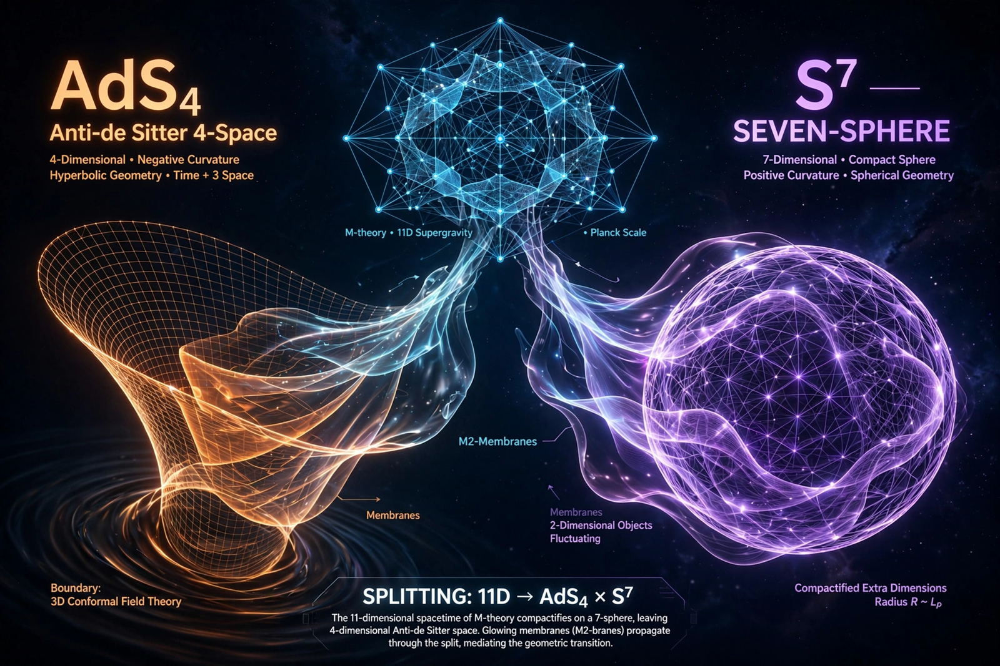

From Wikipedia, the free encyclopedia

M-theory, the eleven-dimensional theory unifying the five superstring theories, has its own versions of the AdS/CFT correspondence involving anti-de Sitter space. The two maximally supersymmetric examples arise from the near-horizon geometries of M-theory's fundamental extended objects, the M2-brane and the M5-brane.
A stack of N M2-branes generates the geometry AdS4×S7. Its boundary dual is a three-dimensional superconformal Chern–Simons–matter theory, described concretely by the ABJM theory (Aharony, Bergman, Jafferis, and Maldacena, 2008). Because three-dimensional CFTs describe many condensed-matter critical points, this duality has applications beyond quantum gravity, and the M2-brane worldvolume theory — lacking a conventional Lagrangian description at large N — is defined holographically by the bulk.
A stack of M5-branes yields AdS7×S4, dual to the mysterious six-dimensional (2,0) superconformal theory, which has no classical Lagrangian description and no tunable coupling. Holography gives the main window into its properties, such as its N³ growth of degrees of freedom, reproduced by the entropy of black holes in the AdS7 bulk.